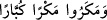

sîgasından daha mübâlağalıdır. Bunun bir benzeri () (Nûh 71/22)
âyetindeki () lafzında da söz konusudur. () kelimesinin anlamı ( ) ifâdesinden
) ifâdesinden
daha çok mübâlağa ifâde eder. Aynı durum () ve () lafızları arasındaki anlam
farkı için de geçerlidir.
Bazıları der ki: Bizim üçyüzaltmış putumuz Mekke’nin bir aylık işini idare edemezken
Muhammed’in bahsettiği tek ilâh bu âlemin tamamını tek başına nasıl idare edecek?
Bu ifâde, Mekkelilerin düşünce ve basîretten ne kadar uzak olduğunu ve gözleriyle
görüp elleriyle tuttukları şeylerin peşinden giderek birtakım kuruntular içine girdiklerini
göstermektedir. Böyle oldukları içindir ki gaipte olan Allah’ı, gördükleri putlarla
mukayese ederek şöyle derler: “Bu devâsâ âlemin korunması için Allah’ın emir ve
hükmü ile hareket eden çok sayıda tanrının bulunması elzemdir.” Bunlar, ne ilâhın ne de
ilâhlığın (ulûhiyyet) anlamını biliyorlar. Çünkü ulûhiyyet, yoktan var etmeğe kâdir
olmak demektir. İki tane yoktan var edenin mevcut olduğunun düşünülmesi ise doğru
değildir; çünkü böyle bir şeyin olması durumunda, ikisi arasında birbirini engelleme
(temânu’) ve böyle bir engellemenin mümkün olması sözkonusu olur ki bu da eksiksiz
bir ulûhiyyetin bulunmasına mânî bir durumdur. Şu halde, bunların ikisi de eksiksiz
olmadığı takdirde ikisi de ilâh olamaz. Genel kural şudur: Varlığı yokluğunu; sübûtu
sukûtunu gerektiren herşey merduddur, bâtıldır.
6. Onlardan ileri gelenler: Yürüyün, tanrılarınıza bağlılıkta direnin, sizden
istenen şüphesiz budur.
“Onlardan ileri gelenler:”
İntılâk (), gitmek demektir. Mele’ ( ) kelimesi de mutlak topluluk mânâsında
) kelimesi de mutlak topluluk mânâsında
değil, “eşrâf” anlamında kullanılır. İleri gelen insanlara mele’ denilmesinin sebebi,
onlar bir meclise gittiklerinde gözler devamlı onlara takılır ve gönüller onların
heybetiyle dolar.
Kureyş’in ileri gelenleri -ki onlar yirmi beş kişiydi- Rasûlullah’ın (s.a.) verdiği
cevapla kendilerini susturması üzerine onun İslâm konusundaki ısrar ve kararlılığını,
onu bütün dinlerden üstün kılma azmini görünce Ebû Tâlib’in meclisinden kalkıp
gittiler. Zira ona bel bağlayarak kurdukları hayalin (anlaşma) suya düştüğünü anladılar.
() lâfzı, kalkıp gitme fiilinin delâlet ettiği sözü tefsir etmektedir. Çünkü bir konuşma
meclisinden kalkıp giderken mutlaka bir söz sarfedilir. Buna göre mânâsı şudur:
Onlardan ileri gelen bir grup nasihat tarzında birbirlerine şu sözleri sarfederek kalkıp
gitti: Takib ettiğiniz yoldan “yürüyün,” gidin, bu adamla konuşmanın bir faydası yok!